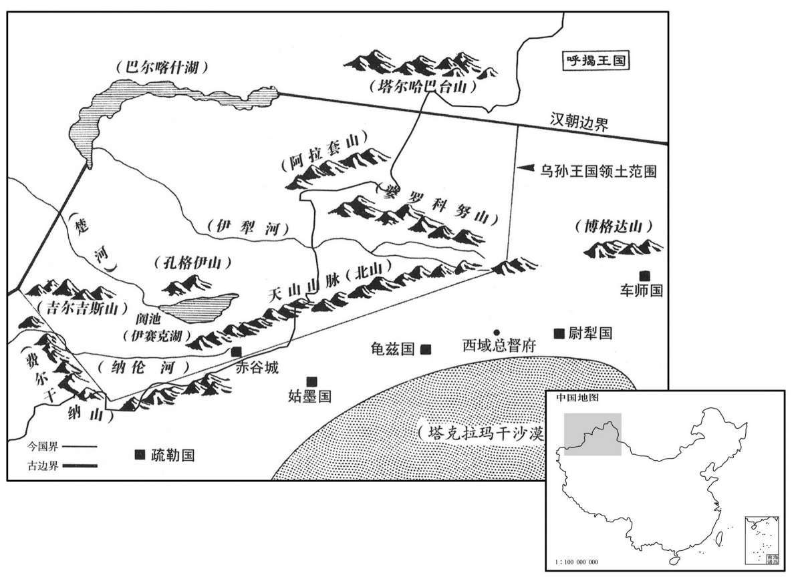

公元前53年资治通鉴：本年记事、原文与白话对照
按原书编年位置阅读；追叙和史论不等于本年发生的事件。白话采用所据译本，缺译不以生成译文补齐。
卷27 · 本年记事
公元前53年 · 汉中宗孝宣皇帝甘露元年
甘露元年〔（戊辰、前五三）〕〔以甘露降纪元。说文：露，润泽也。五经通义：和气津凝为露也。蔡邕月令曰：露者，阴之液也。〕
本年事件索引（现代整理）

本年形势与背景参考图
春，正月，行幸甘泉，郊泰畤。
春季，正月，汉宣帝前往甘泉，在泰祭祀天神。
杨恽之诛也，公卿奏京兆尹张敞，恽之党友，不宜处位。〔处，昌吕翻。〕上惜敞材，独寝其奏，不下。〔师古曰：天子惜敞，故留所奏事不出。下，遐稼翻。〕敝使掾絮舜有所案验，〔李奇曰：絮，音挐。师古曰：絮，姓也，音女居翻，又音人余翻。舜，其名。〕舜私归其家曰：“五日京兆耳，〔舜以敝被奏当免，在位不久也。〕安能复案事！”〔复，扶又翻。〕敞闻舜语，即部吏收舜系狱，昼夜验治，竟致其死事。〔罪不至死，而以事致之，所谓文致也。治，直之翻。〕舜当出死，敞使主簿持教告舜曰：“五日京兆竟何如？冬月已尽，延命乎？”〔主簿，处郡合下，主文簿，因以名官。师古曰：言汝不欲望延汝命乎！〕乃弃舜市。会立春，行冤狱使者出，〔行，下孟翻。〕舜家载尸并编敞教，〔师古曰：编，联也；联之于章前也。〕自信使者。使者奏敞贼杀不辜。上欲令敞得自便，〔师古曰：从轻法以免也。〕即先下敞前坐杨恽奏，免为庶人。〔下，遐稼翻。〕敞诣阙上印绶，〔上，时掌翻。〕便从阙下亡命。〔此即令之得自便也。师古曰：亡命，不还其本县邑也。贤曰：命，名也。谓脱其名籍而逃亡。〕数月，京师吏民解弛，〔师古曰：弛，放也。解，读曰懈，或如字。〕枹鼓数起，〔盗贼多也。枹，音肤。数，所角翻；下同。〕而冀州部中有大贼，天子思敞功效，使使者即家在所召敞。〔师古曰：就其所居处而召之。〕敞身被重劾，〔师古曰：谓前有贼杀不辜之事。劾，户概翻；下同。〕及使者至，妻子家室皆泣〔【章：甲十五行本“泣”下有“惶惧”二字；乙十一行本同；孔本同；张校同；退斋校同。】〕而敞独笑曰：“吾身亡命为民，郡吏当就捕。今使者来，此天子欲用我也。”装随使者，〔治行装而随使者也。〕诣公车上书曰：“臣前幸得备位列卿，待罪京兆，〔西都之制，为三辅者列于九卿。待罪者，谦言也。谓身居其官而于称职，则将有瘝旷之罪，故谓居职为待罪。西都之臣率有是言。〕坐杀掾絮舜。舜本臣敞素所厚吏，数蒙恩贷；〔师古曰：贷，音土带翻。宥罪有贷。〕以臣有章劾当免，受记考事，〔师古曰：记，书也；若今之州县为符教也。〕便归卧家，谓臣五日京兆。背恩忘义，〔背，蒲妹翻。〕伤薄俗化。臣窃以舜无状，枉法以诛之。臣敞贼杀不辜，鞠狱故不直，虽伏明法，死无所恨！”天子引见敞，〔见，贤遍翻。〕拜为冀州刺史。〔冀州部魏郡、巨鹿、常山、清河等郡；广平、真定、中山、信都、河间等国。考异曰：荀纪载于五凤二年，因杨恽事，并致此误也。百官表：“敞以神爵元年为京兆尹，八年免。”敞传云：“为京兆九岁免。”〕敞到部，盗贼屏迹。〔屏，必郢翻。〕
杨恽被杀之后，公卿上奏弹劾京兆尹张敞，说他是杨恽的朋党，不应再占据官位。汉宣帝爱惜张敞的才干，特将奏章压下不发。张敞派下属官员絮舜调查某事，絮舜私自回家，说道：“张敞这个京兆尹最多再干五天罢了，怎能再来查问！”张敞听说絮舜如此说他，立即派官吏将絮舜逮捕下狱，昼夜审崐讯，终于使他被定成死罪。絮舜被杀之前，张敞派主簿拿着他写的教，告诉絮舜：“我这个‘五天京兆尹’究竟怎么样？冬季已经过去，想多活几天吗？”于是将絮舜斩首示众。适逢立春，朝廷派出调查冤狱的使者，絮舜的家属抬着絮舜的尸体，将张敞写给絮舜的教联在辩冤状上，向使者控告张敞。使者上奏汉宣帝，称张敞残杀无辜。汉宣帝打算对张敞从轻发落，便先将以前弹劾张敞为杨恽朋党的奏章发下，将其免官，贬为平民。张敞到宫门前交还印绶，然后从宫门前逃走。数月之后，京师官吏百姓懈怠，多次敲响追捕盗贼的警鼓，冀州也出现巨盗。汉宣帝想起张敞为政的功效，派使臣前往张敞家征召张敞。张敞身遭严厉弹劾，当朝廷使臣到来，其妻子、家属都吓哭了，只有张敞笑着说：“我是一个逃亡的平民，应由郡中派官员来逮捕我。如今朝廷使臣到来，这是天子要起用我。”于是整治行装，随使臣前往公车府，上书汉宣帝说：“我先前有幸位列九卿，担任京兆尹，被指控杀死属员絮舜。絮舜本是我平时厚待的官吏，曾几次加恩宽恕他的过失。他认为我受人弹劾，当会免官，所以我派他去查办事情，他竟然回家睡大觉，说我只能再当五天京兆尹，实在是忘恩负义，伤风败俗。我因他态度恶劣，便借法令以泄私愤，将他诛杀。我残杀无辜，判案故意不公，即使伏法，也死而无恨！”汉宣帝召见张敞，任命他为冀州刺史。张敞到任后，盗贼敛迹不敢再出。
皇太子柔仁好儒，见上所用多文法吏，以刑绳下，常〔【章：甲十五行本“常”作“尝”；乙十一行本同。】〕侍燕从容:“陛下持刑太深，宜用儒生。”〔好，呼到翻；下同。从，千容翻。〕帝作色曰：〔师古曰：作，动也。意怒故动色。〕“汉家自有制度，本以霸王道杂之；柰何纯任德教，用周政乎！〔师古曰：姬周之政。〕且俗儒不达时宜，〔风俗通曰：儒者，区也，言其区别古今。居则翫圣哲之辞，动则行典籍之道，稽先王之制，立当时之事，此通儒也。若能纳而不能出，能言而不能行，讲诵而已，无能往来，此俗儒也。〕好是古非今，使人眩于名实，〔师古曰：眩，乱视也，音胡眄翻。〕不知所守，何足委任！”乃叹曰：“乱我家者太子也！”
皇太子刘性格温柔仁厚，喜欢儒家经术，看到汉宣帝任用的官员大多为精通法令的人，依靠刑法控制臣下，曾在陪侍汉宣帝进餐的时候，从容进言说：“陛下过于依赖刑法，应重用儒生。”汉宣帝生气地说：“我大汉自有大汉的制度，本来就是‘王道’与‘霸道’兼用，怎能像周朝那样，纯用所谓‘礼义教化’呢！况且俗儒不识时务，喜欢肯定古人古事，否定今人今事，使人分不清何为‘名’，何为‘实’，不知所守，怎能委以重任！”于是叹息道：“败坏我家基业的人将是太子！”
史家评论 · 原文及其白话
臣光曰：王霸无异道。昔三代之隆，礼乐、征伐自天子出，则谓之王。天子微弱不能治诸侯，诸侯有能率其与同讨不庭以尊王室者，则谓之霸。〔庭，直也。不庭，不直也。一说以诸侯不朝为不庭。治，直之翻。〕其所以行之也，皆本仁祖义，任贤使能，赏善罚恶，禁暴诛乱；顾名位有尊卑，德泽有深浅，功业有巨细，政令有广狭耳，非若白黑、甘苦之相反也。汉之所以不能复三代之治者，由人主之不为，非先王之道不可复行于后世也。〔复，扶又翻。〕夫儒有君子，有小人。〔论语：孔子谓子夏曰：汝为君子儒，毋为小人儒。谢显道为之说曰：志于义则大，是以谓之君子；忘于利则小，是以谓之小人。〕彼俗儒者，诚不足与为治也，〔治，直吏翻；下同。〕独不可求真儒而用之乎！稷、契、皋陶、伯益、伊尹、周公、孔子，皆大儒也，〔契，息列翻。陶，音遥。〕使汉得而用之，功烈岂若是而止邪！孝宣谓太子懦而不立，暗于治体，必乱我家，则可矣；乃曰王道不可行，儒者不可用，岂不过哉！非〔【章：甲十五行本“过”下有“甚矣”二字；乙十一行本同；孔本同。甲十五行本“非”上有“殆”字；乙十一行本同；孔本同。】〕所以训示子孙，垂法将来者也。
臣司马光曰：“王道”与“霸道”，并无实质的不同。过去，夏、商、周三代昌盛时，无论是制礼作乐，还是发动战争，都由天子决定，则称之为“王道”。天子微弱，不能控制诸侯时，诸侯中有能率领盟国共同征讨叛逆以尊奉王室的，则称之为“霸道”。无论行“王道”还是“霸道”，都以仁义为根据，任用贤能，奖赏善美，惩罚邪恶，禁绝凶残，诛除暴乱。二者只不过于名位上有尊卑之分，德泽上有深浅之别，功业上有大小之差，政令上有广狭之异罢了，并非像黑白、甘苦那样截然相反。汉朝之所以不能恢复夏、商、周三代那样的盛世，是因为君王没有去做，并不是古代圣王之道不能再行于后世。在儒者中，有君子，也有小人。像汉宣帝所说的那种“俗儒”，当然不能同他们治理天下，但难道就不能访求“真儒”而任用吗！像后稷、契、皋陶、伯益、伊尹、周公、孔子，都是大儒，假如汉朝能得到他们而予以重用，汉朝的功业岂能只像现在这样！汉宣帝说太子懦弱不能自立，不懂得治国的方法，必然将败坏刘氏基业，这是可以的；可是说“王道”不可实行，儒者不可任用，岂不是太过分了！不能以此来训示子孙，留给后人效法。
淮阳宪王好法律，〔淮阳王钦，上次子也。好，呼到翻。〕聪达有材；王母张倢伃尤幸。〔倢伃，音接予。〕上由是疏太子而爱淮阳宪王，数嗟叹宪王曰：“真我子也！”常有意欲立宪王，然用太子起于微细，上少依倚许氏，〔疏，读曰疎。数，所角翻。少，诗照翻。依倚许氏事见二十四卷昭帝元平元年。〕及即位而许后以杀死，〔事见二十四卷本始三年。〕故弗忍也。久之，上拜韦玄成为淮阳中尉，以玄成尝让爵于兄，〔事见二十五卷元康四年。〕欲以感谕宪王；由是太子遂安。
淮阳王刘钦喜欢研究法律，聪明通达，很有才干。其母张特别受汉宣帝宠爱。因此，汉宣帝疏远太子刘，疼爱淮阳王刘钦，曾几次赞叹刘钦说：“真是我的儿子！”曾有意要立刘钦为太子，但因刘生于自己微贱之时，那时自己曾靠刘的母亲许氏娘家照顾，而即位后，许皇后又被人害死，所以不忍心。过了很长一段时间，汉宣帝任命韦玄成为淮阳中尉，因韦玄成曾让爵位给其兄长，汉宣帝想以此感动、教育刘钦。于是太子的地位才稳固了。
匈奴呼韩邪单于之败也，左伊秩訾王为呼韩邪计，〔师古曰：訾，音子移翻。〕劝令称臣入朝事汉，从汉求助，如此，匈奴乃定。呼韩邪问诸大臣，皆曰：“不可。匈奴之俗，本上气力而下服役，〔师古曰：以服役于人为下。〕以马上战斗为国，故有威名于百蛮。战死，壮士所有也。〔师古曰：言人皆有此事耳。余谓壮士健则战死，乃本分必有之事。〕今兄弟争国，不在兄则在弟，〔郅支，兄也。呼韩邪，弟也。〕虽死犹有威名，子孙常长诸国。〔师古曰：为诸国之长帅也。长，知两翻；下同。〕汉虽强，犹不能兼并匈奴；柰何乱先古之制，臣事于汉，卑辱先单于，〔师古曰：言忝辱之，更令卑下也。余谓此言先单于与汉争为长雄，而今单于臣事之，是卑辱先单于于地下也。〕为诸国所笑！虽如是而安，何以复长百蛮！”〔复，扶又翻。〕左伊秩訾曰：“不然，强弱有时。今汉方盛，乌孙城郭诸国皆为臣妾。自且鞮侯单于以来，匈奴日削，不能取复，〔且鞮侯单于，呼韩邪之曾祖也。复，报也。且，子余翻。〕虽屈强于此，〔师古曰：屈，音其勿翻。〕未尝一日安也。今事汉则安存，不事则危亡，计何以过此！”诸大人相难久之。〔难，乃旦翻。〕呼韩邪从其计，〔从左伊秩訾王之计也。〕引众南近塞，〔近，其靳翻。〕遣子右贤王铢娄渠堂入侍。〔师古曰：铢，音殊。娄，音力于翻。〕郅支单于亦遣子右大将驹于利受入侍。
匈奴呼韩邪单于被郅支单于打败之后，左伊秩訾王为呼韩邪单于出谋划策，劝他称臣归附汉朝，请求汉朝帮助，这样做了，才能平定匈奴内乱。呼韩邪单于征求各位大臣的意见，都说：“不行。我们匈奴的风俗，历来崇尚力量，耻于在下面服侍别人，靠马上征战建立国家，所以威名才传遍蛮夷各国。战死沙场，是壮士的本分。如今我们内部兄弟争国，不是哥哥得到，就是弟弟得到，即使战死，仍有威名，子孙永远统辖蛮夷各国。汉朝虽然强大，仍不能吞并匈奴，我们为何败坏先祖的制度，向汉朝称臣，使历代先王蒙受羞辱，被各国耻笑！即使能因此而得到安定，又怎能再统辖蛮夷各国！”左伊秩訾王说道：“不对，强弱之势，随时间的推移而改变。如今汉朝正当兴盛，乌孙等城邦国家都已向汉朝称臣。我国自且侯单于以来，势力日益削减，不能恢复，尽管倔强至今，却未曾有一天安宁。而今，称臣于汉，则得以安全生存；如果不肯屈服，必陷于危亡境地。还有什么计策比这更好呢？”各位大臣不断对左伊秩訾王提出诘难，最后，呼韩邪单于终于接受了左伊秩訾王的建议，率众南下，向汉朝边塞靠近，派其子右贤王铢娄渠堂到长安做人质。郅支单于也派其子右大将驹于利受到长安做人质。
二月，丁巳，乐成敬侯许延寿薨。〔恩泽侯表，乐成侯食邑于南阳之平氏。〕
二月丁巳（二十一日），乐成侯许延寿去世。
夏，四月，黄龙见新丰。〔见，贤遍翻。〕
夏季，四月，在新丰发现黄龙。
丙申，太上皇庙火；甲辰，孝文庙火；上素服五日。
丙申（初一），太上皇祭庙失火；甲辰（初九），汉文帝祭庙失火。汉宣帝素服五日。
乌孙狂王复尚楚主解忧，〔复，扶又翻。〕生一男鸱靡，不与主和；又暴恶失众。汉使卫司马魏和意、副侯任昌至乌孙。〔侯，卫侯也；为和意之副。任，音壬。〕公主言：“狂王为乌孙所患苦，易诛也。”〔易，以豉翻。〕遂谋置酒，使士拔剑击之。剑旁下，〔师古曰：不正下也。〕狂王伤，上马驰去。其子细沈瘦会兵围和意、昌及公主于赤谷城；〔师古曰：瘦，音搜。赤谷城，乌孙国都，去长安八千九百里。〕数月，都护郑吉发诸国兵救之，乃解去。汉遣中郎将张遵持医药治狂王，赐金帛；〔治，直之翻。〕因收和意、昌系琐，〔系琐，即今云锁索也。〕从尉犁槛车至长安，斩之。
乌孙狂王泥靡又娶楚公主刘解忧为妻，生下一子，取名鸱靡。狂王与公主关系不和睦，又暴戾凶恶，不得众人之心。汉朝派卫司马魏和意为使臣，卫侯任昌为副使来到乌孙。公主说：“狂王给乌孙带来灾患困苦，杀他很容易。”于是定计，设置酒宴，派武士拔剑刺杀狂王。但剑锋刺偏，狂王受伤，上马奔驰而去。狂王之子细沈瘦率兵将魏和意、任昌以及公主等包围在赤谷城中。数月之后，都护郑吉征调西域各国军队前来救援，围城之兵方才离去。汉朝派中郎将张遵携带医药来给狂王医治，并赏赐黄金丝帛；将魏和意、任昌锁拿，从尉犁用囚车押解到长安，处斩。
初，肥王翁归靡胡妇子乌就屠，狂王伤时，惊，与诸翎侯俱去，居北山中，〔其山在乌孙之北也。翎，与翕同，音许及翻。〕扬言母家匈奴兵来，故众归之；后遂袭杀狂王，自立为昆弥。是岁，汉遣破羌将军辛武贤将兵万五千人至敦煌，通渠积谷，欲以讨之。〔时立表穿渠于卑鞮侯井以西。孟康曰：大井六，通渠也。下流涌出在白龙堆东土山下。敦，徒门翻。〕
当初，乌孙肥王翁归靡与匈奴妻子生的儿子乌就屠，在狂王受伤时惊恐不崐安，与乌孙诸翎侯一齐逃走，藏在北方的山中，扬言其母亲娘家匈奴派兵前来，所以乌孙百姓纷纷归附于他。后乌就屠袭杀狂王，自立为王。这一年，汉朝派破羌将军辛武贤率兵一万五千来到敦煌，疏通河道，积聚粮食，准备征讨乌就屠。
初，楚主侍者冯嫽，〔师古曰：嫽，音了。嫽者，慧也，故以为名。〕能史书，〔史，吏也。犹言吏书也。〕习事，〔内习汉事，外习西域诸国事也。〕尝持汉节为公主使，〔使，疏吏翻。〕城郭诸国敬信之，号曰冯夫人，为乌孙右大将妻。〔乌孙国官，相大禄之下有左、右大将二人，盖贵入也。〕右大将与乌就屠相爱，都护郑吉使冯夫人说乌就屠，〔说，输芮翻。〕以汉兵方出，必见灭，不如降。乌就屠恐，曰：“愿得小号以自处！”〔处，昌吕翻。〕帝征冯夫人，自问状；〔即此事与数诏问赵充国事参而观之，诵鉴所纪一千三百余年间，明审之君，一人而已。〕遣谒者竺次、期门甘延寿为副，送冯夫人。冯夫人锦车持节，〔应劭曰：锦车，以锦衣车也。〕诏乌就屠诣长罗侯赤谷城，立元贵靡为大昆弥，〔元贵靡，肥王翁归靡嫡长男，楚主解忧所生也。事始上卷神爵二年。〕乌就屠为小昆弥，皆赐印绶。破羌将军不出塞，还。后乌孙屠不尽归翎侯人〔【章：甲十五行本“归”下有“诸”字；“人”作“民”；乙十一行本同；孔本同。】〕众，汉复遣长罗侯将三校屯赤谷，因为分别〔【章：甲十五行本“别”下有“其”字；乙十一行本同；孔本同。】〕人民地界，〔复，扶又翻。校，户教翻。别，彼列翻。〕大昆弥户六万余，小昆弥户四万余；然众心皆附小昆弥。〔为汉以两昆弥忧劳张本。〕
当初，刘解忧的侍女冯能够撰写文书，了解汉朝与西域各国事务，所以曾携带汉朝符节为公主出使，各城邦国对她尊敬信任，称其为冯夫人。她是乌孙右大将的妻子。右大将与乌就屠是亲密朋友，所以都护郑吉派冯劝说乌就屠：汉朝军队即将出击，乌孙必将被汉军所灭，不如归降。乌就屠感到恐慌，说道：“希望汉朝封我一个小王名号，使我得以安身。”汉宣帝征召冯来京师，亲自询问乌孙情况，然后派冯乘坐锦车，携带皇帝符节作为正使，以谒者竺次、期门甘延寿为副使，护送冯来到乌孙，传达汉宣帝诏令，命乌就屠到赤谷城去见长罗侯常惠，立元贵靡为大昆弥，乌就屠为小昆弥，都赐予印信、绶带。破羌将军辛武贤未曾出塞，即率兵撤回。后乌就屠不肯将翎侯的部众全部归还，于是汉朝又派长罗侯常惠率领三位军校所属部队屯兵赤谷城，为乌孙划分人口和地界，大昆弥统辖六万余户，小昆弥统辖四万余户。然而，乌孙民众全都心向小昆弥。